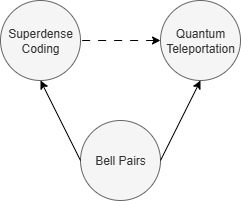

Much of our modern technology relies on the internet. For example, let us consider a bike sharing network in a smart city which allows residents to pick up a bike at one location and then drop it off at another location. Then the bike stations in this smart bike sharing network would share information about bike availability by sending messages over the internet. Of course, we would like our bike sharing network to be secure. If some malicious person online was sending fake information to our bike sharing network, we would like to detect this.
With classical computers, we could solve this problem using cryptography. The idea is that each bike station would have a "key" which it could use as an ID card when sending information to the bike sharing network. It turns out that many of the techniques used in classical cryptography do not make sense for quantum computers. This is because quantum computers cannot send copies of data to each other. A surprising solution to this problem, which forms the basis of most quantum cryptography, is that quantum computers can securely teleport data between each other! Moreover, a single qubit can be used to carry multiple pieces of data at once through a process called superdense coding! The goal of this module is to learn the basics of either quantum teleportation or superdense coding, and to realize that neither is really so magical. An outline of the module is as follows.
You will begin this module by reviewing the concept of a Bell pair for the lesson Entanglement: Spooky Action at a Distance from day 1. Using the Bell pair as a building block, you well then explore two remarkable quantum communication protocols: superdense coding and quantum teleportation! Note that you can choose to do the challenge on superdense coding before the challenge on quantum teleportation. However, some of the concepts from quantum teleportation will help with tackling superdense coding.